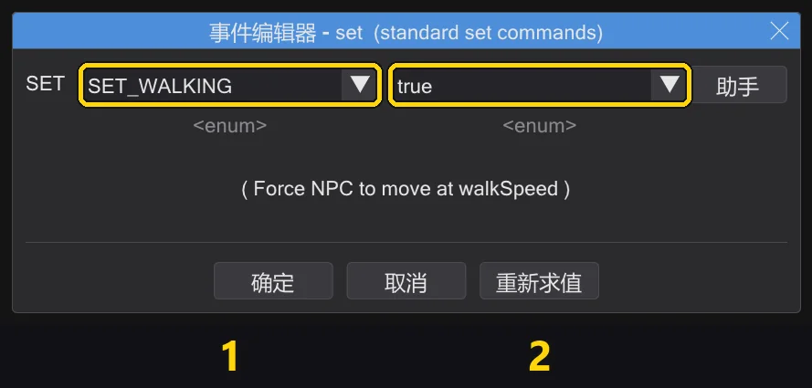
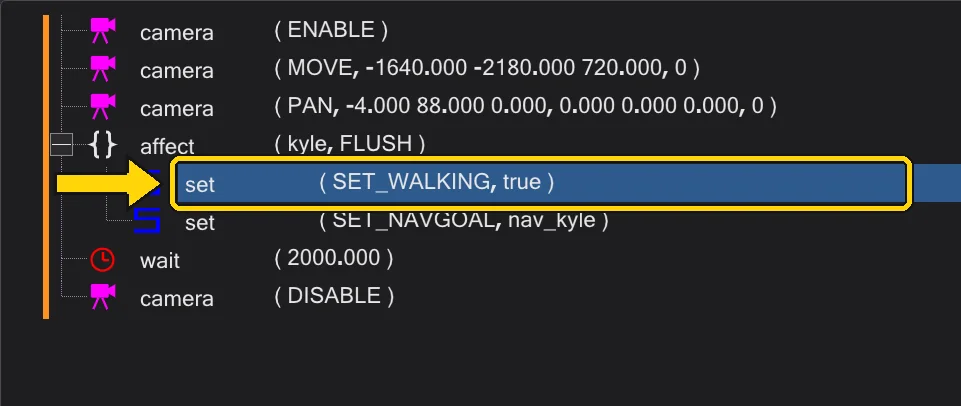
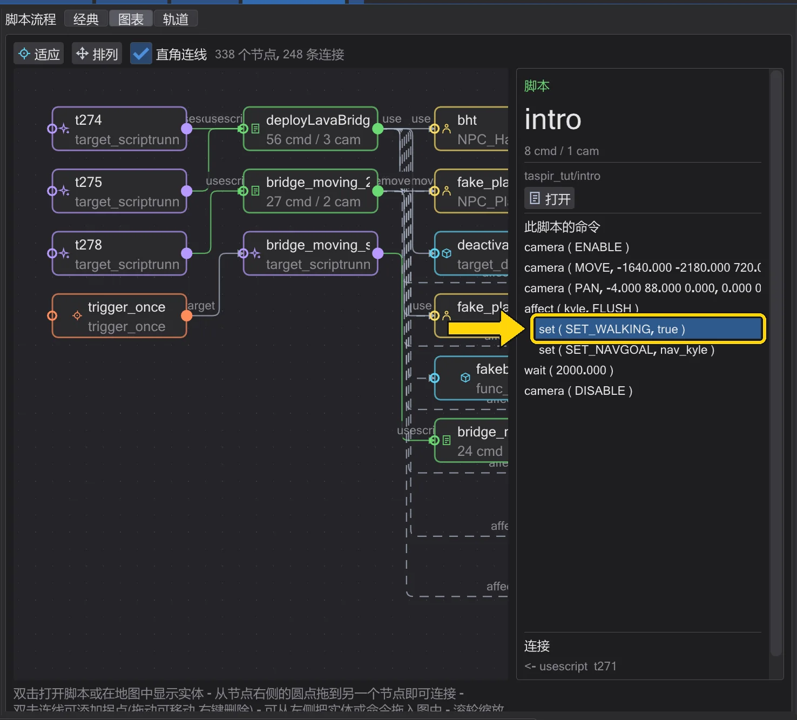
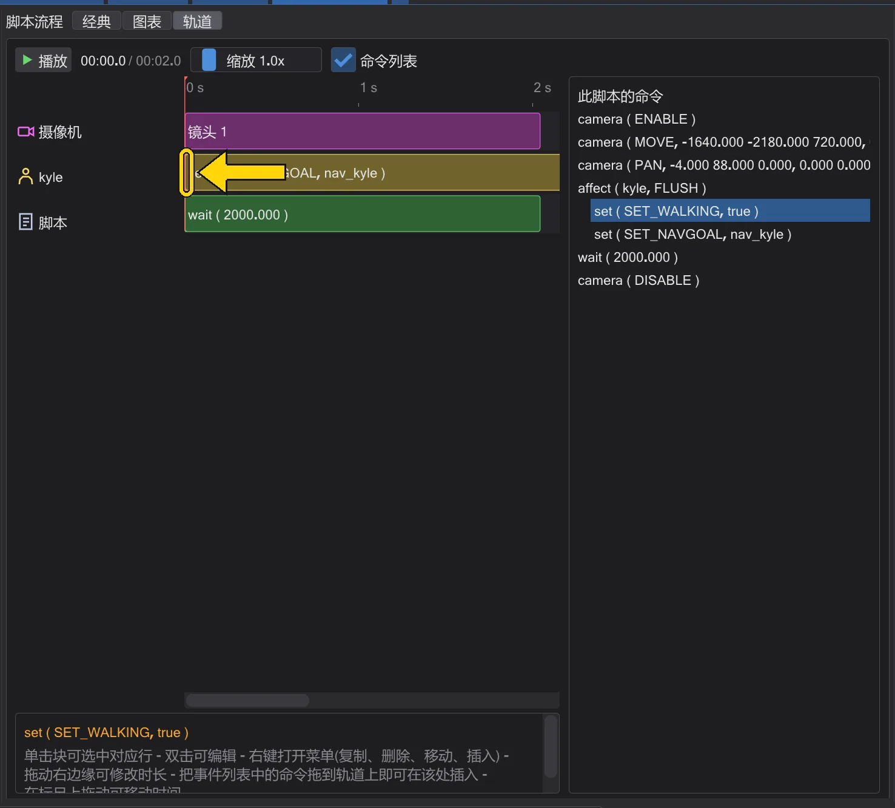

命令
set——更改实体的字段
更改实体的某个值:它如何行走、去哪里、看向哪里、它的动画、它的生命值……
视图:
作用#
带 SET_ 字段的 set 是最常用的命令。在 affect 块中,它会改变该实体:SET_NAVGOAL 让角色走向行走目标,SET_WALKING 让它走而不是跑,SET_LOOK_TARGET 转动它的头,SET_ANIM_BOTH 播放动画。所有字段都在 set ( SET_... )——所有字段 中。
在哪里填写什么#

set 的事件编辑器——编号与下表对应。| 编号 | 名称 | 作用 |
|---|---|---|
| 1 | 字段 | 哪个值——列表中的某个 SET_ 名称。输入其中一部分即可筛选。 |
| 2 | 值 | 新值。其类型取决于字段:true / false、数字、地图中的名称或动画。 |
示例#
set ( SET_WALKING, true ) 和 set ( SET_NAVGOAL, "nav_kyle" )——Kyle 走向 nav_kyle。
在经典、图表和轨道视图中#
页面顶部的切换按钮用于选择视图。三种视图都作用于同一个脚本——切换不会丢失任何内容。
在经典视图中,它是脚本树中的一行。双击它(或选中后按 Enter)打开编辑器;右键单击打开菜单;拖动可移动它。


set。在图表中,脚本是一个节点;选中它后,其命令会列在右侧的 此脚本的命令 下。双击该行进行编辑,右键单击打开菜单,把 事件 列表中的命令拖放到它上面,即可插入到它之后。


set。在轨道视图中,它显示在所属角色的行上(即其 affect 中的名称),长度与其持续时间相同。双击块进行编辑,右键单击打开菜单。行走(SET_NAVGOAL)会持续到角色到达;其他大多数字段不占用时间。


set。须知#
- 帮助文本中标有
*的字段(如SET_NAVGOAL)可以用dowait等待。 - 不在列表中的值也允许(模组会带来自己的值),但会被标记为未知——请检查是否有拼写错误。